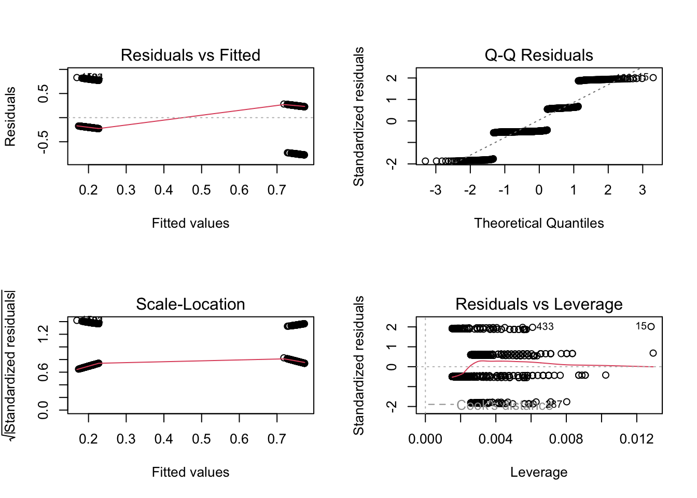

# options(na.action = "na.omit") # reset conditions after model selection
library(EcoData)
library(effects)
## Loading required package: carData
## lattice theme set by effectsTheme()
## See ?effectsTheme for details.
library(DHARMa)
## This is DHARMa 0.4.6. For overview type '?DHARMa'. For recent changes, type news(package = 'DHARMa')
# Logistic ----------------------------------------------------------------
# save pclass as.factor
str(titanic) #from EcoData package
## 'data.frame': 1309 obs. of 14 variables:
## $ pclass : int 1 1 1 1 1 1 1 1 1 1 ...
## $ survived : int 1 1 0 0 0 1 1 0 1 0 ...
## $ name : chr "Allen, Miss. Elisabeth Walton" "Allison, Master. Hudson Trevor" "Allison, Miss. Helen Loraine" "Allison, Mr. Hudson Joshua Creighton" ...
## $ sex : chr "female" "male" "female" "male" ...
## $ age : num 29 0.917 2 30 25 ...
## $ sibsp : int 0 1 1 1 1 0 1 0 2 0 ...
## $ parch : int 0 2 2 2 2 0 0 0 0 0 ...
## $ ticket : chr "24160" "113781" "113781" "113781" ...
## $ fare : num 211 152 152 152 152 ...
## $ cabin : chr "B5" "C22 C26" "C22 C26" "C22 C26" ...
## $ embarked : chr "S" "S" "S" "S" ...
## $ boat : chr "2" "11" "" "" ...
## $ body : int NA NA NA 135 NA NA NA NA NA 22 ...
## $ home.dest: chr "St Louis, MO" "Montreal, PQ / Chesterville, ON" "Montreal, PQ / Chesterville, ON" "Montreal, PQ / Chesterville, ON" ...
titanic$Fpclass = as.factor(titanic$pclass)
# another way of getting a mosaic plot (no table required)
mosaicplot( ~ survived + sex + pclass, data = titanic)
# lm will not give you an error, but residuals are clearly not normal
fit <- lm(survived ~ age, data = titanic)
summary(fit)
##
## Call:
## lm(formula = survived ~ age, data = titanic)
##
## Residuals:
## Min 1Q Median 3Q Max
## -0.4642 -0.4156 -0.3796 0.5806 0.6867
##
## Coefficients:
## Estimate Std. Error t value Pr(>|t|)
## (Intercept) 0.464814 0.034973 13.291 <2e-16 ***
## age -0.001894 0.001054 -1.796 0.0727 .
## ---
## Signif. codes: 0 '***' 0.001 '**' 0.01 '*' 0.05 '.' 0.1 ' ' 1
##
## Residual standard error: 0.4912 on 1044 degrees of freedom
## (263 observations deleted due to missingness)
## Multiple R-squared: 0.003082, Adjusted R-squared: 0.002127
## F-statistic: 3.227 on 1 and 1044 DF, p-value: 0.07271
par(mfrow = c(2,2))
plot(fit)
# logistic regression with categorial predictor
m1 = glm(survived ~ sex, data = titanic, family = "binomial")
summary(m1)
##
## Call:
## glm(formula = survived ~ sex, family = "binomial", data = titanic)
##
## Deviance Residuals:
## Min 1Q Median 3Q Max
## -1.6124 -0.6511 -0.6511 0.7977 1.8196
##
## Coefficients:
## Estimate Std. Error z value Pr(>|z|)
## (Intercept) 0.9818 0.1040 9.437 <2e-16 ***
## sexmale -2.4254 0.1360 -17.832 <2e-16 ***
## ---
## Signif. codes: 0 '***' 0.001 '**' 0.01 '*' 0.05 '.' 0.1 ' ' 1
##
## (Dispersion parameter for binomial family taken to be 1)
##
## Null deviance: 1741.0 on 1308 degrees of freedom
## Residual deviance: 1368.1 on 1307 degrees of freedom
## AIC: 1372.1
##
## Number of Fisher Scoring iterations: 4
# 2 groups: sexmale = difference of mean for male from mean for female
# intercept = linear term for female:
0.98
## [1] 0.98
#but: this has to be transformed back to original scale before being interpreted!!!
# survival probability for females
plogis(0.98)
## [1] 0.7271082
# applies inverse logit function
# linear term for male
0.98 - 2.43
## [1] -1.45
# survival probability
plogis(0.98 - 2.43)
## [1] 0.1900016
# predicted linear term
table(predict(m1))
##
## -1.44362529285895 0.981813020919237
## 843 466
# predicted response
table(predict(m1, type = "response"))
##
## 0.190984578884942 0.727467811158278
## 843 466
plot(allEffects(m1))
# more predictors
m2 = glm(survived ~ sex + age, titanic, family = binomial)
summary(m2)
##
## Call:
## glm(formula = survived ~ sex + age, family = binomial, data = titanic)
##
## Deviance Residuals:
## Min 1Q Median 3Q Max
## -1.7247 -0.6859 -0.6603 0.7555 1.8737
##
## Coefficients:
## Estimate Std. Error z value Pr(>|z|)
## (Intercept) 1.235414 0.192032 6.433 1.25e-10 ***
## sexmale -2.460689 0.152315 -16.155 < 2e-16 ***
## age -0.004254 0.005207 -0.817 0.414
## ---
## Signif. codes: 0 '***' 0.001 '**' 0.01 '*' 0.05 '.' 0.1 ' ' 1
##
## (Dispersion parameter for binomial family taken to be 1)
##
## Null deviance: 1414.6 on 1045 degrees of freedom
## Residual deviance: 1101.3 on 1043 degrees of freedom
## (263 observations deleted due to missingness)
## AIC: 1107.3
##
## Number of Fisher Scoring iterations: 4
# Calculate Pseudo R2: 1 - Residual deviance / Null deviance
1 - 1101.3/1414.6 # Pseudo R2 of model
## [1] 0.221476
# Anova
anova(m2, test = "Chisq")
## Analysis of Deviance Table
##
## Model: binomial, link: logit
##
## Response: survived
##
## Terms added sequentially (first to last)
##
##
## Df Deviance Resid. Df Resid. Dev Pr(>Chi)
## NULL 1045 1414.6
## sex 1 312.612 1044 1102.0 <2e-16 ***
## age 1 0.669 1043 1101.3 0.4133
## ---
## Signif. codes: 0 '***' 0.001 '**' 0.01 '*' 0.05 '.' 0.1 ' ' 1
plot(allEffects(m2))
# Model diagnostics
# do not use the plot(model) residual checks
# use DHARMa package
library(DHARMa)
res = simulateResiduals(m2)
plot(res)
# Poisson -----------------------------------------------------------------
head(birdfeeding)
## feeding attractiveness
## 1 3 1
## 2 6 1
## 3 8 1
## 4 4 1
## 5 2 1
## 6 7 2
plot(feeding ~ attractiveness, birdfeeding)
fit = glm(feeding ~ attractiveness, birdfeeding, family = "poisson")
summary(fit)
##
## Call:
## glm(formula = feeding ~ attractiveness, family = "poisson", data = birdfeeding)
##
## Deviance Residuals:
## Min 1Q Median 3Q Max
## -1.55377 -0.72834 0.03699 0.59093 1.54584
##
## Coefficients:
## Estimate Std. Error z value Pr(>|z|)
## (Intercept) 1.47459 0.19443 7.584 3.34e-14 ***
## attractiveness 0.14794 0.05437 2.721 0.00651 **
## ---
## Signif. codes: 0 '***' 0.001 '**' 0.01 '*' 0.05 '.' 0.1 ' ' 1
##
## (Dispersion parameter for poisson family taken to be 1)
##
## Null deviance: 25.829 on 24 degrees of freedom
## Residual deviance: 18.320 on 23 degrees of freedom
## AIC: 115.42
##
## Number of Fisher Scoring iterations: 4
# feeding for a bird with attractiveness 3
# linear term
1.47 + 0.148 * 3
## [1] 1.914
# pieces of food, using inverse of the link function, log --> exp
exp(1.47 + 0.148 * 3)
## [1] 6.780155
plot(allEffects(fit))
# checking residuals
res = simulateResiduals(fit)
plot(res, quantreg = F)
## Warning in smooth.spline(pred, res, df = 10): not using invalid df; must have 1
## < df <= n := #{unique x} = 5
# the warning is because of a recent change in DHARMa
# qgam requires more data points
# test for overdispersion
testDispersion(fit)
##
## DHARMa nonparametric dispersion test via sd of residuals fitted vs.
## simulated
##
## data: simulationOutput
## dispersion = 0.74488, p-value = 0.384
## alternative hypothesis: two.sided
# Dispersion test is necessary for all poisson or binomial models with k/n
# if positive, you can chose family = quasi-poisson or quasi-binomial
# or use negative binomial distribution instead of poisson